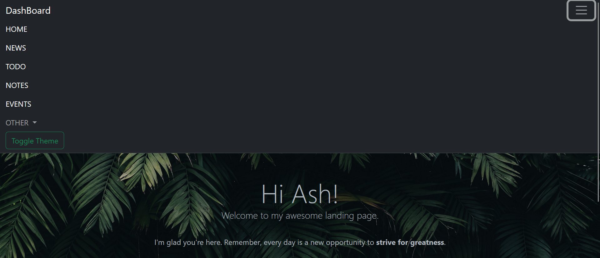
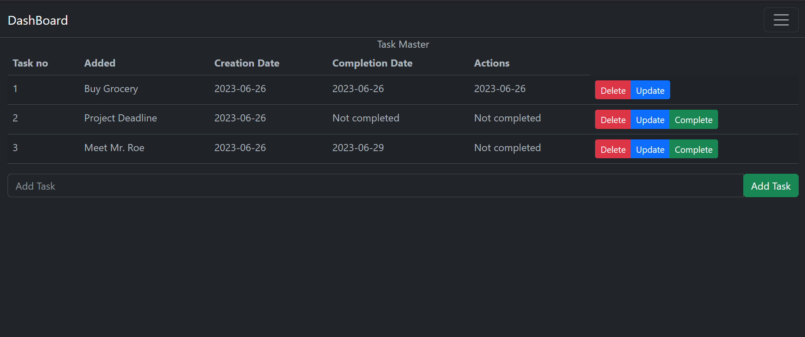
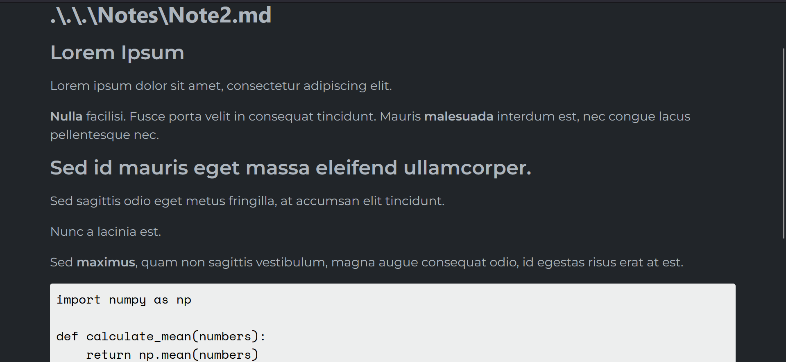
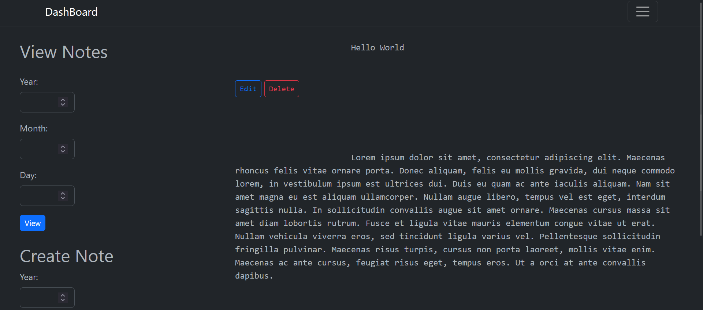
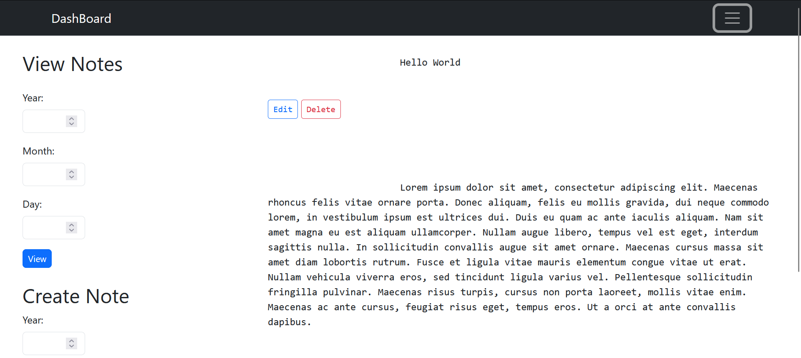

Introducing the Dashboard App: A Comprehensive Solution for Your Productivity
Introduction
In this fast-paced world, staying organized and informed is essential for maximizing productivity. That's where the Dashboard App comes into play. Developed using Flask, HTML, CSS, and JavaScript, this all-in-one solution offers a multitude of functionalities to streamline your daily tasks. In this blog post, we will explore the key features of the app and how it can revolutionize your productivity.

1. News: Stay Informed with Current News
The Dashboard App provides a convenient way to stay up-to-date with the latest news. By utilizing RSS feeds, the app fetches current news articles and displays them in a user-friendly webpage. With just a click, you can access a wealth of information from various sources, ensuring you never miss out on important developments.

2. Todo: Simplify Task Management
Managing tasks effectively is crucial for maintaining productivity. The Todo feature of the Dashboard App allows you to effortlessly organize your to-do lists. You can create new tasks, assign completion dates, and even leave some tasks open-ended. The app also tracks the creation date, enabling you to prioritize tasks based on their urgency. Additionally, a separate page displays all your incomplete tasks for easy tracking and efficient task completion.

3. Notes: Access and Read Markdown Files
Taking notes and accessing them quickly is vital for capturing ideas and important information. With the Notes feature, the Dashboard App simplifies this process by seamlessly scanning your filesystem for markdown files. It converts these files into HTML format, making them easily viewable within the app. Whether you need to refer to meeting minutes or personal reflections, the app offers a convenient way to access and read your notes on the go.

4. Events: Efficiently Manage Your Schedule
Keeping track of events and important dates is crucial for effective time management. The Events feature in the Dashboard App enables you to store events and notes specific to particular dates. You can add multiple notes in text format for a given date, ensuring you capture all relevant details. This feature empowers you to stay organized and prepared for upcoming events, whether they are work-related or personal.

Emailer: Timely Reminders for Tasks and Events
The Dashboard App incorporates a powerful Emailer feature that sends timely updates regarding your todos and events. This functionality runs as a separate background process, using a cronjob to ensure you receive important reminders at the right time. By leveraging this automated emailing system, you can stay on top of your tasks and events effortlessly, improving your overall productivity.

Dark and Light Mode: Customize Your Experience
To enhance user experience and accommodate different preferences, the Dashboard App offers the flexibility to switch between dark and light modes. Whether you prefer a darker theme for focused work or a lighter interface for a soothing ambiance, the app adapts to your needs, ensuring a comfortable and personalized experience.
Languages:
- Python: A powerful and versatile programming language used for the backend development of the app.
Frameworks:
Flask: A lightweight and flexible web framework for Python, providing essential tools for web application development.
Libraries:
- feedparser: A library used for parsing and processing RSS feeds, allowing the app to fetch and display current news articles.
- openpyxl: A library for reading and writing Excel files, enabling data manipulation and storage.
- markdown: A library for converting Markdown files into HTML, facilitating the viewing and formatting of notes.
- SQLite: A relational database management system integrated into Python, used for efficient data storage and retrieval.
- smtplib: A library for sending emails, utilized for the automated emailing functionality of the app.
Frontend Technologies:
- HTML: The standard markup language for structuring web content.
- CSS: Cascading Style Sheets, used for styling and formatting the app's user interface.
- JavaScript: A programming language that enables interactivity and dynamic functionality on web pages.
- Bootstrap: A CSS framework that provides pre-designed components and responsive layouts, enhancing the visual aesthetics and mobile-friendliness of the app.
Conclusion
The Dashboard App, developed using Flask, HTML, CSS, and JavaScript, brings together an array of powerful functionalities to boost your productivity. From accessing current news and managing tasks to organizing notes, events, and automated reminders, this comprehensive solution has you covered. With its user-friendly interface and customizable options, the app empowers you to streamline your daily routine, maximize efficiency, and achieve your goals. Try out the Dashboard App today and experience a new level of productivity.
By utilizing this combination of languages, frameworks, libraries, and frontend technologies, the Dashboard App offers a comprehensive and efficient solution for managing tasks, accessing news, taking notes, organizing events, and enhancing productivity.